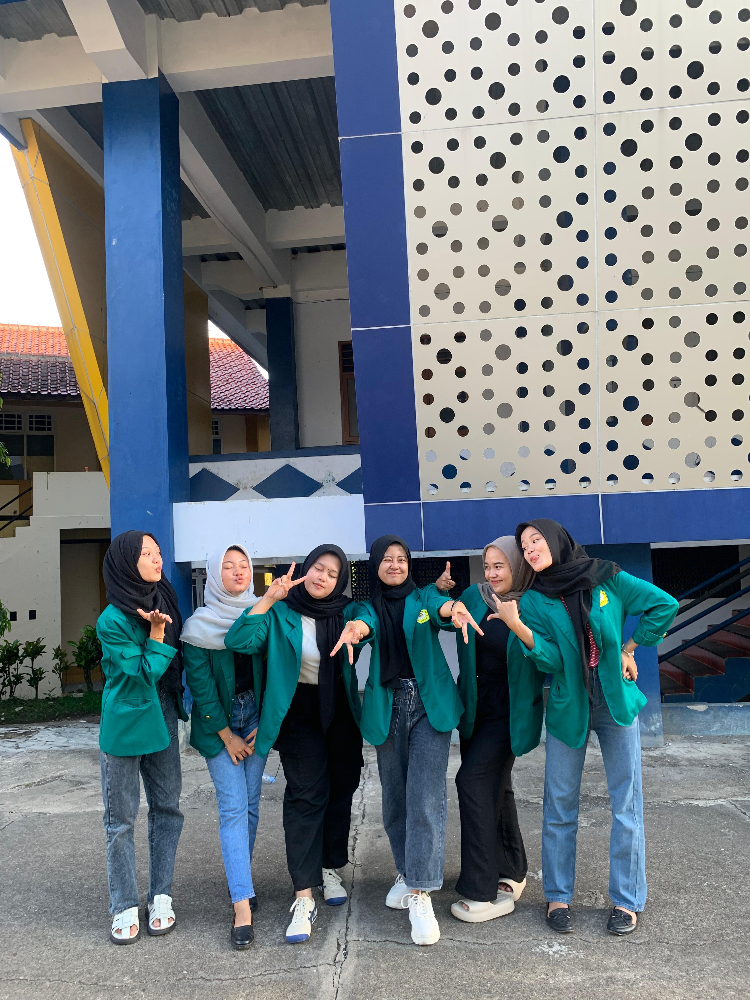

Selamat datang di portofolio Saya! Hai perkenalkan nama Saya Nadeya Ladia Tantri. Saya merupakan mahasiswa semester 5 di Universitas Sebelas April. Dengan kepribadian yang ceria dan penuh semangat menjadikan Saya orang yang mudah bergaul.
"Let the past be the past"
| Posisi | Organisasi | Tahun |
|---|---|---|
| Anggota Muda Div.Penalaran dan Keilmuan | Himpunan Mahasiswa Informatika | 2022-2023 |
| Staf Div.Sosial dan Relasi Publik | Himpunan Mahasiswa Informatika | 2023-2024 |
| Staf Div.P2M | Tahungoding | 2024-2025 |
Hobi Saya dapat berubah-ubah sesuai dengan keadaan pada saat itu, namun ada satu hobi yang saya mulai dari kelas 4 SD dan sampai sekarang tidak berubah dan masih saya lakukan yaitu membaca novel dan beberapa buku yang menurut saya menarik.
Sebenarnya ada banyak lagu yang saya sukai, namun untuk sekarang saya sedang sering mendengankan lagu dari ABBA yang berjudul Dancing Queen.
Dibawah merupakan teman-teman Saya di masa Universitas ini, dimulai dari semester satu sampau dengan sekarang kami selalu bersama melewati semua ujian dan overthinking dalam mengerjakan tugas, UTS dan UAS. Arigathanks barudakk!!
"Kerjakan, Kirim, Seblak dan OVT berjamaah.... SABUBUKNA SAMPAI SARJANA!!!" - The Girls Of 5B AKA Enam Garis Biru❄️